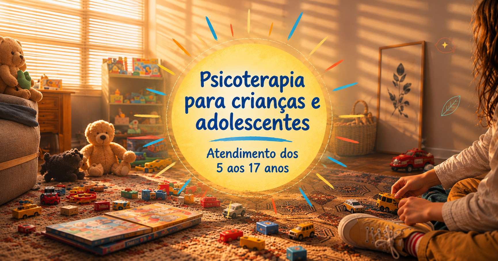

mudanças intensas de comportamento

Psicoterapia para crianças e adolescentes
Quando buscar acompanhamento
Situações que podem indicar a necessidade de acompanhamento
medos e inseguranças frequentes
dificuldades escolares ou de socialização
conflitos familiares
separações, perdas e outras mudanças importantes.
ansiedade, irritabilidade ou isolamento
dificuldades relacionadas à autoestima e identidade
Cada criança e adolescente expressa o sofrimento de uma maneira. Mais do que um sinal isolado, é importante observar mudanças, sua intensidade e os impactos que produzem na vida cotidiana.
A psicoterapia com crianças
O acompanhamento começa com uma conversa com os responsáveis, para compreender a história da criança, seu contexto, as principais preocupações da família e o que motivou a busca pela psicoterapia.
Quando necessário, esse primeiro momento, com a família, pode acontecer ao longo de mais de um encontro.
Após essa compreensão inicial, começam os encontros com a criança. Na psicoterapia infantil, o brincar, os desenhos, as histórias, os jogos e outros recursos são valorizados como formas de expressão.
Muitas vezes, é por meio dessas experiências que a criança consegue comunicar sentimentos, conflitos e vivências que ainda não consegue colocar em palavras.
O processo busca oferecer um espaço seguro e acolhedor para que ela possa reconhecer emoções, elaborar experiências e construir novas formas de lidar com seus sentimentos, relações e desafios cotidianos.
A psicoterapia com adolescentes
O acompanhamento também pode começar com uma conversa com os responsáveis, para compreender o contexto familiar, a história do adolescente e os motivos que levaram à busca pela psicoterapia.
Dependendo da situação, esse primeiro encontro pode acontecer com os responsáveis, com o adolescente ou com ambos.
A partir daí, o adolescente passa a ter um espaço próprio de escuta, no qual pode falar sobre o que está vivendo sem precisar ter tudo organizado ou saber exatamente por onde começar.
Questões relacionadas às relações, autoestima, identidade, escola, família, escolhas, inseguranças, pertencimento e às mudanças próprias dessa fase podem surgir ao longo do processo.
A psicoterapia respeita a singularidade, o tempo e a autonomia do adolescente, buscando construir uma relação de confiança para que ele possa compreender melhor o que sente, elaborar conflitos e encontrar novas possibilidades diante das situações que enfrenta.
A família também faz parte do processo
Quando necessário, os responsáveis podem participar de alguns momentos do acompanhamento.
Essa participação é pensada com cuidado, de acordo com as necessidades da criança ou do adolescente, sempre respeitando o espaço terapêutico e a confidencialidade do processo.
Vamos conversar